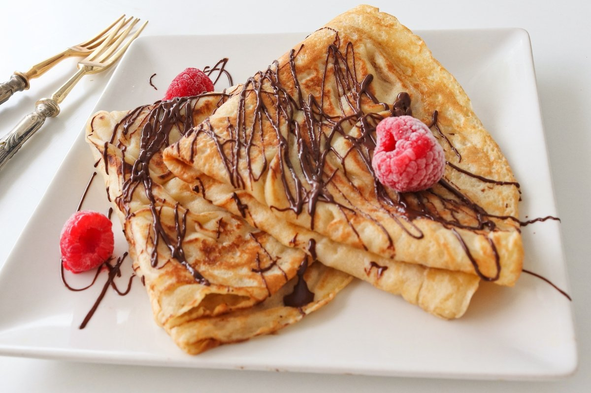

Crêpes
Las crêpes o crepes son panqueques muy finos de origen francés que, generalmente, se sirven rellenos.
Las crêpes se hacen a base de harina de trigo, con la que se elabora una masa en forma de disco, de unos 16 cm de diámetro.
Se sirven habitualmente como base de un plato o postre, aplicándoles todo tipo de ingredientes dulces.
A continuación, la receta para preparar unas ricas crêpes dulces.
Ingredientes
Para la masa
- 125 gr. harina 0000
- 2 huevos
- 50 gr. manteca
- 250 ml. leche
- 1 pizca de sal
- 5 gr. azúcar
- C/n de manteca o aceite para untar la sartén
Para acompañar
- Untable de chocolate
- Azúcar impalpable
- Manteca de maní
- Frutas cortadas
- Chips de chocolate
- Frutos secos
Para servir
Una vez que todas las crêpes estén listas, podés rellenarlas con lo que prefieras.
Una opción clásica es utilizar crema de chocolate y avellanas y trozos de fruta.
La crêpe se rellena y se sirve doblada en cuartos.
Por último, podés espolvorearla con azúcar impalpable, chips, frutos secos o rociarla con un poco de chocolate o agregar trozos de fruta por encima.
¡A disfrutar!